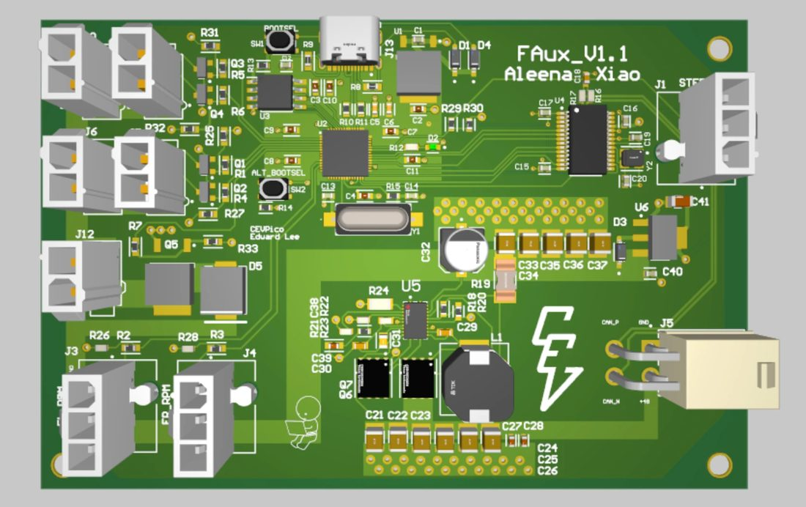

Front Auxiliary I/O Board
2026Cornell Electric Vehicles
A distributed front I/O board on a CAN bus that replaced a single central board. It carries a 48 V to 12 V synchronous buck with external FETs to power the horn, lighting, steering, and speed sensors. Receives drive commands (headlights, indicators, horn) from the CAN bus and publishes sensor data back onto the bus.